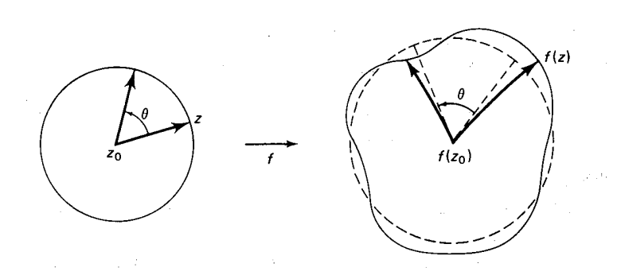

Notes for Introduction to Complex Analysis
Table of Contents
- 1. Sequences and limits
- 2. Continuity
- 3. Basic topology of \(\mathbb{C}\)
- 4. Derivatives
- 5. Cauchy-Riemann Equations
- 6. Some consequences of the Cauchy-Riemann Equations
- 7. Harmonic Functions
- 8. Conformal Mappings
- 9. Cauchy's Theorem and Cauchy's Integral Formula
- 10. Laurent Series and Residue Theorem
1 Sequences and limits
A sequence in \(\mathbb{C}\) is a function \(\varphi: \mathbb{N}\to \mathbb{C}\). We use the notation \(z_n = \varphi(n)\) and \(\{z_n\}_{n=1}^{\infty}\) for the image \(\varphi(\mathbb{N})\).
Let \(\{z_n\}_{n=1}^{\infty}\) be a sequence in \(\mathbb{C}\). We say that the sequence converges to \(z_0\in \mathbb{C}\) if for every \(\epsilon >0\) there exists \(n_0\in \mathbb{N}\), such that for every \(n\geq n_0\) it holds that \(|z_n - z_0| < \epsilon\). In this case \(z_0\) is called the limit of the sequence \(\{z_n\}_{n=1}^{\infty}\) and we write \[ \lim_{n\to\infty} z_n = z_0. \]
If a sequence converges to a limit, this is unique.
Supose that the sequence \(\{z_n\}_{n=1}^{\infty}\subset \mathbb{C}\) has two limits \(z_0\) and \(w_0\). Then for any \(\epsilon >0\) choose \(n\in \mathbb{C}\) such that for any \(n\geq n_0\), we have simultaneously \[ |z_n - z_0| < \frac{\epsilon}{2}, \mbox{ and } |z_n - w_0 | < \frac{\epsilon}{2}. \] Then \[ | z_0 - w_0 | = |z_0 - z_n + z_n - w_0 | \leq | z_n - z_0 | + | z_n - w_0| < \frac{\epsilon}{2} + \frac{\epsilon}{2} = \epsilon. \] Since \(\epsilon >0\) is arbitrary, this happens only if |z0 - w0| = 0. Then \(z_0 = w_0\).
Let \(\{z_n\}_{n=1}^{\infty}\) be a sequence in \(\mathbb{C}\), with \(z_n = x_n + i y_n\), and \(z_0 = x_0 + iy_0\). Then the sequence converges to \(z_0\) if and only if the sequences of real numbers \(\{x_n\}_{n=1}^{\infty}\) and \(\{y_n\}_{n=1}^{\infty}\) converge respectively to \(x_0\) and \(y_0\). Equivalently \[ \lim_{n\to\infty}z_n = z_0 \iff \lim_{n\to\infty}x_n = x_0 \mbox{ and } \lim_{n\to\infty}y_n = y_0. \]
Let \(\epsilon >0\). Then there exists \(n_0 \in \mathbb{N}\), such that for any \(n\geq n_0\) the following holds: \[ |x_n - x_0 | = | \mbox{Re}(z_n - z_0) | \leq |z_n - z_0 | < \epsilon. \] This shows that \(\lim_{n\to \infty} x_n = x_0\). The second part follows from a similar argument on the imaginary part of the sequence.
Every convergent sequence \(\{z_n\}_{n=1}^{\infty} \subset \mathbb{C}\) is bounded, i.e., there exists a positive real number \(M>0\), such that \(|z_n| \leq M\) for all \(n\in\mathbb{N}\).
Let \(\epsilon = 1\). By convergence, there exists \(n_0\in \mathbb{N}\) such that whenever \(k\geq n_0\) it holds that \[ |z_k - z_0 | < 1. \] Now consider \(M = \max\{ |z_1| + 1, |z_2| + 1, \ldots, |z_{k-1}| + 1, |z_0| + 1\}\). Then it is clear that \[ |z_n| \leq M, \mbox{ for all } n \in \mathbb{N}. \]
Remark The converse of last proposition is false. Discuss an example.
(Bolzano-Weierstrass) Every bounded sequence in \(\mathbb{C}\) has a convergent sub-sequence.
The proof relies on the same result known for sequences of Real numbers.
Let \(\{z_n\}_{n=1}^{\infty}\) a bounded sequence where \(z_n = x_n + iy_n\). Since the sequence is bounded we note that \[ |x_n | \leq |z_n| \leq M, \quad n\in\mathbb{N}. \] Then the sequence of real numbers \(\{x_n\}_{n=1}^{\infty}\) is bounded. There exists a convergent subsequence \(\left\{x_{n_k}\right\}_{k=1}^{\infty}\) with limit \(x_0\in \mathbb{R}\). Now consider the corresponding subsequence of complex numbers \(\left\{z_{n_k}\right\}_{k=1}^{\infty}\), where \(z_{n_k} = x_{n_k} + i y_{n_k}\). Since the sequence of complex numbers is bounded, we conclude that \(\left\{y_{n_k}\right\}_{k=1}^{\infty}\) is also a bounded sequence of Real numbers. Then there exists a convergent subsequence \(\left\{y_{n_{k_j}}\right\}_{j=1}^{\infty}\) wiht limit \(y_0\). Recall that any subsequence of a convergent sequence is also convergent to the same limit, and conclude that \(\left\{x_{n_{k_j}}\right\}_{j=1}^{\infty}\) has limit \(x_0\). Then \[ \lim_{j\to \infty} z_{n_{k_j}} = \lim_{j\to \infty} \left(x_{n_{k_j}} + i y_{n_{k_j}}\right) = x_0 + iy \] is a convergent subsequence of \(\{z_n\}_{n=1}^{\infty}\).
A sequence \(\{z_n\}_{n=1}^{\infty}\) is called Cauchy sequence if for every \(\epsilon >0\) there exists \(n_0\in\mathbb{N}\) such that, if \(n,m \geq n_0\) then \(|z_n - z_m| <\epsilon\).
A sequence \(\{z_n\}_{n=1}^{\infty}\) converges if and only if \(\{z_n\}_{n=1}^{\infty}\) is a Cauchy sequence.
By writing \(z_n = x_n + i y_n\) and from the inequalities \[ |x_n - x_m | \leq |z_n - z_m|, \] and \[ |y_n - y_m | \leq |z_n - z_m|, \] it follows that The sequence \(\{z_n\}_{n=1}^{\infty}\) of complex numbers is Cauchy if and only if \(\{x_n\}_{n=1}^{\infty}\) and \(\{y_n\}_{n=1}^{\infty}\) are Cauchy sequences of Real numbers if and only if the sequences of real numbers \(\{x_n\}_{n=1}^{\infty}\) and \(\{y_n\}_{n=1}^{\infty}\) are convergent if and only if \(\{z_n\}_{n=1}^{\infty}\) is a convergent sequence.
Let \(\{z_n\}_{n=1}^{\infty}\) and \(\{w_n\}_{n=1}^{\infty}\) two convergent sequences, with \(\lim_{n\to\infty}z_n = z_0\) and \(\lim_{n\to\infty}w_n = w_0\). Then the following identities hold:
- \(\displaystyle\lim_{n\to\infty}(z_n + w_n) = z_0 + w_0\),
- \(\displaystyle\lim_{n\to\infty}(z_n \, w_n) = z_0 \, w_0\),
- \(\displaystyle\lim_{n\to\infty}|z_n| = |z_0|\),
- If \(w_n \neq 0\) for all \(n\in \mathbb{N}\), then \(\displaystyle\lim_{n\to\infty}\left(\dfrac{z_n}{w_n}\right) = \dfrac{z_0}{w_0}\).
Proof of 1. It follows from the triangle inequality and the definition. Let \(\epsilon > 0\), then there exists \(n_0 \in \mathbb{N}\) such that for any \(n\geq n_0\) it simultaneously holds \(|z_n - z_0| < \frac{\epsilon}{2}\) and \(|w_n - w_0| < \frac{\epsilon}{2}\), then \[ |(z_n + w_n) - (z_0 + w_0) | = |(z_n - z_0) + (w_n - w_0) | < \frac{\epsilon}{2} + \frac{\epsilon}{2} = \epsilon. \] That is \(\displaystyle\lim_{n\to\infty}(z_n + w_n) = z_0 + w_0\).
Proof of 2. It follows also from the definition, the triangle inequality and the fact that every convergent sequence is bounded. Since \(\{z_n\}_{n=1}^{\infty}\) is convergent, there is \(M_1>0\) such that \(|z_n| < M_1\) for all \(n\in\mathbb{N}\) and the same for \(\{w_n\}_{n=1}^{\infty}\), there is \(M_2 >0\) such that \(|w_n| < M_1\) for all \(n\in\mathbb{N}\). Take \(M = \max\{M_1,M_2\}\), and then \(M>0\) is a bound for both sequences. Let \(\epsilon > 0\), then there exists \(n_0 \in \mathbb{N}\) such that for any \(n\geq n_0\) it simultaneously holds \(|z_n - z_0| < \frac{\epsilon}{2M}\) and \(|w_n - w_0| < \frac{\epsilon}{2M}\). Then
\begin{equation*} \begin{split} |z_n w_n - z_0 w_0 | &= | z_n w_n - z_n w_0 + z_n w_0 - z_0 w_0 | \\ & \leq | z_n w_n - z_n w_0 | + |z_n w_0 - z_0 w_0 | \\ & = |z_n| | w_n - w_0| + |w_0| |z_n - z_0| \\ & \leq M | w_n - w_0| + M |z_n - z_0| \\ & < \frac{\epsilon}{2} + \frac{\epsilon}{2} = \epsilon. \end{split} \end{equation*}That is \(\displaystyle\lim_{n\to\infty}(z_n \, w_n) = z_0 \, w_0\).
Proof of 3. It follows from a version of the triangle inequality. Let \(\epsilon > 0\), then there exists \(n_0 \in \mathbb{N}\) such that for any \(n\geq n_0\) it holds \(|z_n - z_0| < \epsilon\). Note then that \[ |\, |z_n| - |z_0| \, | \leq |z_n - z_0| < \epsilon. \] That is \(\displaystyle\lim_{n\to\infty}|z_n| = |z_0|\).
Proof of 4. Let \(\epsilon_1 = \frac{|w_0|}{2}\), then there exists \(n_0 \in \mathbb{N}\) such that for any \(n\geq n_0\) it holds \(|w_n - w_0| < \frac{|w_0|}{2}\). First note that \[ \left| \frac{1}{w_n} - \frac{1}{w_0} \right| = |\frac{ w_0 - w_n}{w_n w_0} | = \frac{ |w_0 - w_n|}{|w_n |\, |w_0|}. \]
On the other hand by the triangle inequality \[ |w_0| - |w_n| \leq \left|\, |w_0| - |w_n|\, \right| \leq |w_0 - w_n | < \frac{|w_0|}{2}, \] this implies \[ \frac{|w_0|}{2} \leq |w_n|, \] or equivalently \[ \frac{1}{|w_n|} \leq \frac{2}{|w_0|}. \] Then we get \[ \left| \frac{1}{w_n} - \frac{1}{w_0} \right| \leq \frac{ |w_0 - w_n|}{|w_n |\, |w_0|} \leq \frac{2 |w_0 - w_n|}{ |w_0|^2}. \]
For any \(\epsilon >0\) define \(\epsilon_2 = \frac{|w_0|^2\epsilon}{2}\), then there exists \(m_0 \in \mathbb{N}\) such that for any \(n\geq m_0\) it holds \(|w_n - w_0| < \frac{|w_0|^2\epsilon}{2}\). Take \(N_0 = \max\{n_0, m_0\}\). Then we can improve our last inequality, for any \(n \geq N_0\) it holds \[ \left| \frac{1}{w_n} - \frac{1}{w_0} \right| \leq \frac{ |w_0 - w_n|}{|w_n |\, |w_0|} \leq \frac{2 |w_0 - w_n|}{ |w_0|^2} < \epsilon. \] This shows that \(\displaystyle\lim_{n\to\infty}\frac{1}{w_n} = \frac{1}{w_0}\). Finally applying (2) of this proposition we have \[ \displaystyle\lim_{n\to\infty}\frac{z_0}{w_n} = \lim_{n\to\infty} z_n\frac{1}{w_n} = \lim_{n\to\infty} z_n \lim_{n\to\infty}\frac{1}{w_n} = \frac{z_0}{w_0} \]
Recall from real analysis, that every monotone and bounded sequence of real numbers is convergent.
- If the sequence \(\{a_n\}_{n=1}^{\infty}\) is increasing then \(\lim_{n\to\infty} a_n = \sup\{a_n| n\in \mathbb{N}\}\).
- If the sequence \(\{a_n\}_{n=1}^{\infty}\) is decreasing then \(\lim_{n\to\infty} a_n = \inf\{a_n| n\in \mathbb{N}\}\).
We say that \(\lim_{n\to\infty} z_n = \infty\) if \(\lim_{n\to \infty}|z_n| = \infty\). In other words, if for every \(M>0\) there exists \(n_0\in\mathbb{N}\) such that for all \(n\geq n_0\) then \(|z_n| > M\).
Let \(\{z_n\}_{n=1}^{\infty} \subset \mathbb{C}\) be a sequence. A complex number \(w_0\in\mathbb{C}\) is called a limit point of the sequence \(\{z_n\}_{n=1}^{\infty}\) if there exists a subsequence \(\{z_{n_k}\}_{k=1}^{\infty}\) of \(\{z_n\}_{n=1}^{\infty}\) such that \[ \lim_{k\to\infty}z_{n_k} = w_0. \]
2 Continuity
The function \(f(z)\) is said to have the limit \(w_0\in \mathbb{C}\) as \(z\) tends to \(a\in\mathbb{C}\), if for every \(\epsilon >0\) there exists a number \(\delta = \delta(\epsilon) >0\) with the property that if \(|z - a| < \delta\) then it holds \(|f(z) - w_0| <\epsilon\), and in that case we write \[ \lim_{z\to a} f(z) = w_0 . \]
The function \(f(z)\) is said to be continuous at \(z_0\) if for if for every \(\epsilon >0\) there exists a number \(\delta = \delta(\epsilon) >0\) with the property that if \(|z - a| < \delta\) then it holds \(|f(z) - f(a)| <\epsilon\), and in that case we write \[ \lim_{z\to a} f(z) = f(a) . \]
Examples
- Let \(f:\mathbb{C}\setminus\{1\} \to \mathbb{C}\) the function given by \[f(z) =\dfrac{z^2 - 4}{z - 2}, \] then \(\lim_{z\to 2} f(z) = 4\).
- Let \(f:\mathbb{C} \to \mathbb{C}\) be the conjugate function \(f(z) = \bar{z}\). Then \(f(z)\) is continuous at every \(z_0\in \mathbb{C}\). To show this, first note that \(|z| = |\bar{z}|\). Let \(\epsilon >0\) and choose \(0< \delta = \epsilon\). Then, for any \(z\in \mathbb{C}\) such that \(|z-z_0|\) we can estimate \[ |f(z) - f(z_0)| = |\bar{z} - \bar{z_0}|=|\overline{z - z_0}| = |z- z_0| < \delta = \epsilon.\].
Let \(U \subset \mathbb{C}\), \(f: U \to \mathbb{C}\) and \(a\in U\). Then the following three statements are equivalent:
- \(f\) is continuous at \(a\).
- For every \(\epsilon >0\) there exists a number \(\delta >0\) such that \(f\left( B_{\delta}(a) \cap U\right) \subseteq B_{\epsilon}(f(a))\).
- For every sequence \(\{z_n\}_{n=1}^{\infty}\subseteq U\) such that \(\displaystyle\lim_{n\to \infty} z_n = a\), we have \[\displaystyle\lim_{n\to \infty} f(z_n) = f(a).\]
(1 ⇒ 2) Let \(\epsilon >0\), then there is a number \(\delta >0\) such that for every \(z\in U\) with \(|z-a| < \delta\) then \(|f(z) - f(a)| < \epsilon\). This implies that if \(z\in B_{\delta}(a) \cap U\) then \(f(B_{\delta}(a) \cap U)\subseteq B_{\epsilon}(f(a))\).
(2 ⇒ 1) Let \(\epsilon >0\), then there is a number \(\delta >0\) such that \(f(B_{\delta}(a) \cap U)\subseteq B_{\epsilon}(f(a))\). This means that for every \(z\in B_{\delta}(a) \cap U\) we have \(f(z)\in B_{\epsilon} (f(a))\). This means that for every \(z\in U\) with \(|z-a| < \delta\) it holds \(|f(z) - f(a)| < \epsilon\).
(1 ⇒ 3) Let \(f(z)\) be continuous at \(a\in U\) and \(\{z_n\}_{n=1}^{\infty}\subseteq U\) with limit \(a\). For any \(\epsilon >0\) there exists a number \(\delta >0\) such that for every \(z\in U\) with \(|z-a|<\delta\) it holds \(|f(z)-f(a)| < \epsilon\). For that \(\delta >0\) there is a \(n_0\in \mathbb{N}\) such that for any \(n\geq n_0\) we have \(|z_n - a| \leq \delta\). Then by continuity this implies that \(|f(z_n) - f(a) | < \epsilon\). This shows that \(\lim_{n\to \infty} f(z_n) = f(a)\).
(3 ⇒ 1) Let \(a\in U\) and assume that for any \(\{z_n\}_{n=1}^{\infty}\subseteq U\) with limit \(a\) we have \(\lim_{n\to \infty} f(z_n) = f(a)\). Suppose on the contrary, that \(f\) is not continuous at \(a\). Then there exists a positive \(\epsilon >0\) such that for every \(\delta >0\) there is a point \(z\in U\) with \(|z -a| < \delta\) but \(|f(z) - f(a)| \geq \epsilon\). Note that this implies that for any \(n\in\mathbb{N}\) we can choose \(\delta = \frac{1}{n}\) and \(z_n\in U\) such that \(|z_n - a| < \frac{1}{n}\), but \(|f(z_n) - f(a)| \geq \epsilon\). In this way we have constructed a sequence \(\{z_n\}_{n=1}^{\infty}\) such that \(\lim_{n\to\infty}z_n = a\) but \(\lim_{n\to\infty}f(z_n) \neq f(a)\) which is a contradiction to our initial assumptions.
(1 ⇒ 3) Let \(f(z)\) be continuous at \(a\). Consider any sequence \(\{z_n\}_{n=1}^{\infty}\subseteq U\) such that \(\lim_{n\to \infty} z_n = a\). Then for \(\epsilon >0\) there is a number \(\delta >0\) such that for all \(z\in U\) with \(|z-a|<\delta\) we have \(|f(z) - f(a)| < \epsilon\). Also for such \(\delta >0\), there exists \(n_0\in \mathbb{N}\) such that for all \(n\geq n_0\) we have \(|z_n - a| < \delta\), which then implies \(|f(z_n) - f(a)| < \epsilon\).
Let \(U\subseteq\mathbb{C}\) and \(f,g:U\to \mathbb{C}\) be two continuous functions at \(a\in U\). Then \(f\pm g\), \(f\cdot g\) are continuous in \(a\). If \(g(a) \neq 0\) then \(\dfrac{f}{g}\) is also continuous at \(a\).
Let \(U_1, U_2 \subseteq \mathbb{C}\), and \(f:U_1\to \mathbb{C}\), \(g:U_2\to \mathbb{C}\), such that \(f(U_1)\subseteq U_2\). If \(f\) is continuous at \(z_0\in U_1\) and g is continuous at \(w_0 = f(z_0)\in U_2\), then the composition \(g\circ f\) is continuous at \(z_0\).
Consider any sequence \(\{z_n\}_{n=1}^{\infty}\subseteq U_1\) such that \(\lim_{n\to \infty}z_n = z_0\). Then define \(w_n = f(z_n) \in U_2\). Since \(f\) is continuous at \(z_0\), then \(\lim_{n\to\infty}f(z_n) = \lim_{n\to\infty}w_n = w_0 = f(z_0)\). Since \(g\) is continuous at \(w_0\) then \(\lim_{n\to \infty}g(w_n) = g(w_0)\). Note that on the left hand side \(g(w_n) = g(f(z_n)) = (g\circ f)(z_n)\), and on the right hand side \(g(w_0) = g(f(z_0)) = (g\circ f)(z_0)\). This shows that \(\lim_{n\to\infty}(g\circ f)(z_n) = (g\circ f)(z_0)\).
Let \(U\subseteq \mathbb{C}\) and consider a function \(f:U\to\mathbb{C}\). \(f\) is called uniformly continuous if for every \(\epsilon >0\) there exists \(\delta >0\) such that for any \(z,w\in U\) such that \(|z-w| < \delta\) then we have \(|f(z) - f(w) | < \epsilon\).
Example. Consider \(f: A\to \mathbb{C}\) , \(f(z) = z^2\) in the following cases:
- \(A = \{z\in \mathbb{C} \, |\, |z| \leq 1\}\).
In this case \(f\) is uniformly continuous in \(A\). Let \(\epsilon>0\) and take \(\delta = \epsilon/2\). Then, for any \(z,w\in A\) such that \(|z-w| < \delta\) we have \[ |f(z) - f(w) | = |z^2 - w^2| = |z-w||z+w| \leq |z-w| (|z|+|w|) \leq 2 |z-w| < \epsilon. \]
- \(A = \mathbb{C}\).
In this case \(f\) is not uniformly continuous. Take \(\epsilon = 1\). For every \(\delta >0\) there exists \(n\in \mathbb{N}\) such that \(n\delta > 1\). Now consider \(z= n\) and \(w = n + \delta/2\). Note that we have \(|z - w| = \delta/2 < \delta\), but \[ |f(z) - f(w) | = |n^2 - \left(n + \frac{\delta}{2}\right)^2| = n\delta + \frac{\delta^2}{4} > n\delta > 1 = \epsilon. \]
3 Basic topology of \(\mathbb{C}\)
The open and closed disks (balls) already defined, are basic subsets that may be used to build a topological structure of the complex plane. A topology allows us to define several notions of continuity.
\[ B_r(z_0) = \{ z\in \mathbb{C} \, | \, |z-z_0| < r\}. \] \[ \bar{B}_r(z_0) = \{ z\in \mathbb{C} \, | \, |z-z_0| \leq r\}. \]
A set \(A\subseteq \mathbb{C}\) is called open if \(\forall z\in A\) there exists a real number \(r_z >0\) such that \(B_{r_z}(z)\subseteq A\).
The following sentences are true
- The sets \(\mathbb{C}\), \(\emptyset\), \(B_r(z)\) ( for any \(r>0\) ) and any \(z\in \mathbb{C}\), are open sets.
- If \(U_1, \ldots, U_n\) is a finite collection of open sets, then \(\cap_{k=1}^n U_{k}\) is an open set.
- If \(\{U_{\alpha}\}_{\alpha\in I}\) is a family of open sets, then \(\cup_{\alpha\in I}U_{\alpha}\) is an open set.
\(\mathbb{C}\) is open. For any \(z\in \mathbb{C}\), take \(r=1\) and evidently \(B_{1}(z)\subset \mathbb{C}\).
\(\emptyset\) is open. If this wasn't true, there would exists \(z\in \emptyset\) such that for any \(r>0\), \(B_{r}(z)\nsubseteq \emptyset\). Then the statement is vacuously true.
\(B_{r}(z)\) is open. Let \(w\in B_{r}(z)\). Take \(\delta = r - |w-z|\), and note that \(\delta >0\). To show that \(B_{\delta}(w) \subset B_{r}(z)\) we need to show that any \(\xi \in B_{\delta}(w)\) is also in \(B_{r}(z)\). If \(\xi \in B_{\delta}(w)\) then \(|\xi - w| < \delta\). Since \(|\xi - z| = |\xi - w + w - z| \leq |\xi - w| + | w - z| < \delta + |w-z| = r - |w-z| + |w-z| = r\). Then \(\xi \in B_{r}(z)\).
\(\cap_{k=1}^n U_k\) is open if each \(U_i\) is open. Let \(z\in\cap_{k=1}^n U_k\). Then for each \(1\leq k \leq n\) there exists \(r_{k}>0\) such that \(B_{r_k}(z) \subseteq U_k\). Take \(r = \min\{r_1,\ldots,r_k\}\), and hence \(B_{r}(z)\subset U_k\) for every \(1\leq k \leq n\). Hence \(B_{r}(z)\subset \cap_{k=1}^n U_k\).
\(\cup_{\alpha \in I} U_{\alpha}\) is open if each \(U_{\alpha}\) is open. Let \(z\in\cup_{\alpha \in I} U_{\alpha}\). Then there exists \(\beta \in I\) such that \(z \in U_{\beta}\). Since \(U_{\beta}\) is open, there is \(r >0\) such that \(B_{r}(z)\subset U_{\beta} \subset \cup_{\alpha \in I} U_{\alpha}\).
A set \(G\subseteq \mathbb{C}\) is called closed if its complement \(\mathbb{C}\setminus G\), is an open set.
The following sentences are true
- The sets \(\mathbb{C}\), \(\emptyset\), are closed sets.
- If \(G_1, \ldots, G_n\) is a finite collection of closed sets, then \(\cup_{k=1}^n G_{k}\) is a closed set.
- If \(\{G_{\alpha}\}_{\alpha\in I}\) is a family of closed sets, then \(\cap_{\alpha\in I}G_{\alpha}\) is a closed set.
Let \(A\subset \mathbb{C}\). Then we define the following sets
- The interior of \(A\): \(\quad\mbox{Int}(A) = \cup \{ U \,|\, U\subset A, \mbox{ and } U \mbox{ is an open set} \}\).
- The closure of \(A\): \(\quad\mbox{Cl}(A) = \cap \{ G \,|\, A \subset G, \mbox{ and } G \mbox{ is a closed set} \}\).
- The boundary of \(A\): \(\quad\partial A = \mbox{Cl}(A) \cap \mbox{Cl}\left( \mathbb{C} \setminus A\right)\).
Let \(A,B\subseteq \mathbb{C}\). Then following statements are true
- \(\mbox{Int}(A)\subset A\).
- \(A \subset \mbox{Cl}(A)\).
- \(\partial A \subseteq \mbox{Cl}(A)\).
- \(A\) is open if and only if \(A = \mbox{Int}(A)\).
- \(A\) is closed if and only if \(A = \mbox{Cl}(A)\).
- \(\mbox{Cl}(A\cup B) = \mbox{Cl}(A) \cup \mbox{Cl}(B)\).
- \(\mbox{Cl}(A\cap B) \subseteq \mbox{Cl}(A) \cap \mbox{Cl}(B)\), but in general they are not equal.
- \(\mbox{Int}(A\cap B) = \mbox{Int}(A) \cap \mbox{Int}(B)\).
- \(\mbox{Int}(A\cup B) \supseteq \mbox{Int}(A) \cup \mbox{Int}(B)\), but in general they are not equal.
- \(z_0\in \mbox{Int}(A) \Leftrightarrow \exists r>0, \mbox{ such that } B_{r}(z_0)\subseteq A\).
- \(z_0\in \mbox{Cl}(A) \Leftrightarrow \forall r>0, \mbox{ it holds } B_{r}(z_0)\cap A \neq \emptyset\).
- \(z_0\in \partial(A) \Leftrightarrow \forall r>0, \mbox{ it holds } B_{r}(z_0)\cap A \neq \emptyset \mbox{ and } B_{r}(z_0)\cap \left(\mathbb{C} \setminus A\right) \neq \emptyset\).
The topological structure of \(\mathbb{C}\) induces in a natural way a topological structure in any subset \(A\subset \mathbb{C}\).
Let \(A\subset \mathbb{C}\). The set \(B\subseteq A\) is called open (closed) in \(A\), if there is an open (closed) set \(U\) of \(\mathbb{C}\) such that \(B = A \cap U\).
Let \(A\subseteq \mathbb{C}\). Then the following sentences are true
- The sets \(A\), \(\emptyset\), are open sets and closed sets in \(A\).
- If the set \(B\subseteq A\) is open in \(A\), then \(A\setminus B\) is closed in \(A\).
- If the set \(B\subseteq A\) is closed in \(A\), then \(A\setminus B\) is open in \(A\).
- If \(U_1, \ldots, U_n\) is a finite collection of open sets in \(A\), then \(\cap_{k=1}^n U_{k}\) is an open set in \(A\).
- If \(\{U_{\alpha}\}_{\alpha\in I}\) is a family of open sets in \(A\), then \(\cup_{\alpha\in I}U_{\alpha}\) is an open set \(A\).
- If \(G_1, \ldots, G_n\) is a finite collection of closed sets in \(A\), then \(\cup_{k=1}^n G_{k}\) is a closed set in \(A\).
- If \(\{G_{\alpha}\}_{\alpha\in I}\) is a family of closed sets in \(A\), then \(\cap_{\alpha\in I}G_{\alpha}\) is a closed set in \(A\).
Let \(A\subset \mathbb{C}\). \(z_0\in \mbox{Cl}(A)\) if and only if there exists a sequence \(\{z_n\}_{n}^{\infty}\subset A\) such that \(\lim_{n\to\infty}z_n = z_0\).
By the previous proposition, since \(z_0\in \mbox{Cl}(A)\), we have that for every \(n\in \mathbb{N}\) we can take \(r_n = \frac{1}{n} >0\), and it holds \[ B_{r_n}(z_0)\cap A \neq \emptyset .\] Then for each \(n\) we can choose \(z_n \in B_{r_n}(z_0)\cap A\). Clearly we have \[ |z_n - z_0 | < \frac{1}{n}, \] for all \(n \in \mathbb{N}\), which implies \(\lim_{n\to\infty}z_n = z_0\).
- The set \(A\subset \mathbb{C}\) is called disconnected, if there are two open sets \(U,V\) in \(\mathbb{C}\) such that
- \((A\cap U) \neq \emptyset\) and \((A\cap V) \neq \emptyset\).
- \(U\) and \(V\) are disjoint in \(A\): \((A\cap U) \cap( A\cap V) = \emptyset\)
- \(A\subseteq U\cup V\).
- The set \(A\) is called connected if it is not disconnected.
The set \(A\) is connected if and only if only the sets \(A\) and \(\emptyset\) are the only sets that are both, open and closed in \(A\).
(\(\Rightarrow\)) Let \(A\) be connected and suppose on the contrary that there is a set \(B\subset A\), that is both, open and closed, and different from \(A\) and \(\emptyset\). Then \(B\) and \(A\setminus B\) are open sets in \(A\). Then, there are open sets \(U,V\subseteq\mathbb{C}\) such that \(B = A\cap U\) and \(A\setminus B = A \cap V\). then we have:
- \((A\cap U) \neq \emptyset\) and \((A\cap V) \neq \emptyset\).
- \((A\cap U) \cap( A\cap V) = B \cap (A\setminus B) = \emptyset\).
- \(A = B\cup (A\setminus B) = (A\cap U) \cup( A\cap V) = A \cap \left( U \cup V \right)\) which implies that \(A \subseteq U\cup V\).
These three points are a contradiction since \(A\) is assumed connected.
(\(\Leftarrow\)) Let \(A\) and \(\emptyset\) the only sets that are both, open and closed in \(A\). Suppose on the contrary that \(A\) is disconnected. Then there are two open sets in \(U,V\subset \mathbb{C}\) satisfying the definition above. Put \(B_1 = A\cap U\) and \(B_2 = A \cap V\). Then \(B_1\) and \(B_2\) are non-empty open sets in \(A\). Since \(B_1 \cap B_2 = \emptyset\), and \(A = B_1\cup B_2\). Then \(A\setminus B_1 = B_2\), which implies that \(B_2\) is also closed. Moreover, since \(B_1\neq \emptyset\), \(B_2 \neq A\), which is a contradiction. Then \(A\) is connected.
Let \(A\subset \mathbb{C}\). By a curve \(\gamma\) in \(A\) we mean a continuous map \(\gamma:[0,1]\to A\). We say that \(A\) is called arc-connected or path-connected if for any two points \(z_1, z_2 \in \mathbb{C}\) there exists a curve \(\gamma\) in \(A\) such that \(\gamma(0) = z_1\) and \(\gamma(1) = z_2\).
Let \(A\subset \mathbb{C}\).
- If \(A\) is arc-connected then \(A\) is connected.
- If \(A\) is open and connected then \(A\) is arc-connected.
Here is an example of a connected set which fails to be arc-connected Example.
A domain \(\Omega \subseteq \mathbb{C}\) is an open connected set.
Let \(A\subseteq \mathbb{C}\). An open cover of \(A\) is a family \(\{U_{\alpha}\}_{\alpha \in I}\) of open subsets of \(\mathbb{C}\), such that \(A\subset \cup_{\alpha\in I} U_{\alpha}\).
A finite subcover is a collection \(\{ U_{\alpha_1},\ldots, U_{\alpha_k}\}\) such that \(A \subseteq \cup_{j=1}^k U_{\alpha_j}\).
The set \(K\subset \mathbb{C}\) is called compact if any open cover of \(K\), has a finite subcover.
(Heine-Borel). The set \(K\subset \mathbb{C}\) is compact if and only \(K\) is closed and bounded.
(\(\Rightarrow\)).
If \(K\) is compact then \(K\) is closed. Supose there is \(z_0\in \mbox{cl}(K)\) such that \(z_0\notin K\), and consider the following sets: All balls \(B_r(z_0)\) and for each \(z\in K\) choose a ball \(U_z:=B_{r_z}(z)\) such that \(r_z>0\) is small enough to not intersect one of the \(B_r(z_0)\). Note now that the collection \(\{U_z \}_{z\in K}\) is an open cover of \(K\) but clearly any finite choice of \(U_z\)'s fails to cover \(K\).
If \(K\) is compact then \(K\) is bounded. For each $z ∈ \(K\) consider the set \(U_{z} = B_{1}(z)\). Clearly \(\{U_z \}_{z\in K}\) is an open cover of \(K\), and then there is a finite open subcover \(U_{z_1}, \ldots, U_{z_n}\). Take \(M = \max\{|z_1| + 1, \ldots, |z_k| +1 \}\). Then \(K \subset \cup_{k=1}^{n} U_{z_k} \subseteq B_M\), i.e. \(K\) is bounded.
(\(\Leftarrow\)). Exercise. Hint. Show first that any closed subset of a compact set is also compact. Use the bounded property to show that \(K\) must be contained in a square of the form \(G= [-r,r]\times [-r,r]\) and show that show that \(G\) is compact.
\(K\subset \mathbb{C}\) is compact if and only if for every sequence \(\{z_n\}_{n=1}^{\infty}\subset K\) has a convergent subsequence, i.e., \(\{z_{n_k}\}_{k=1}^{\infty}\) such that \(\lim_{k\to\infty} z_{n_k} = z_0\) for some \(z_0\in K\).
(\(\Rightarrow\)) Let \(K\subset\mathbb{C}\) compact. If \(\{z_n\}_{n=1}^{\infty}\subset K\) is a bounded sequence since \(K\) is bounded. By Bolzano-Weierstrass' Theorem, the sequence has a convergent subsequece, say to a limit point \(z_0\in \mbox{Cl}(K)\). Since \(K\) is closed then \(z_0\in K\).
(\(\Leftarrow\)) Suppose that any \(\{z_n\}_{n=1}^{\infty}\subset K\) has a convergent subsequece. IF \(K\) is not bounded, then we can construct a sequence \(\{z_n\}_{n=1}^{\infty}\) such that \(|z_n| > n\) for all \(n\in \mathbb{N}\). But this sequence has no convergent subsequence, which is a contradiction. Then \(K\) should be bounded.
Now take any \(z_0\in \mbox{Cl}(K)\). By a previous proposition, we can construct a sequence \(\{z_{n}\}_{n=1}^{\infty}\) such that \(\lim_{n\to\infty} z_n = z_0\). By our hypothesis, the sequence \(\{z_{n_k}\}_{k=1}^{\infty}\) such that \(\lim_{k\to\infty} z_{n_k} = w_0\), for some \(w_0\in K\). By the uniqueness of the limit, \(z_0 \in K\). We he have shown \(\mbox{Cl}(K) \subseteq K\), which implies \(\mbox{Cl}(K) = K\), i.e., \(K\) is closed.
Let \(f:A\to\mathbb{C}\) be a function. Then the following sentences are equivalent
- \(f\) is continuous in \(A\).
- For every open set \(V \subset \mathbb{C}\), the set \(f^{-1}(V)\) is open in \(A\).
- For every closed set \(G \subset \mathbb{C}\), the set \(f^{-1}(G)\) is closed in \(A\).
(1 \(\Rightarrow\) 2) Assume \(f\) is continuous in \(A\). Let \(V\subset \mathbb{C}\) any open such that \(f(A)\cap V \neq \emptyset\). We want to show that \(f^{-1}(V)\) is an open subset of \(A\). Let \(z_0\in f^{-1}(V)\), then \(f(z_0)\in V\), and since \(V\) is open there exists an open ball \(B_r(f(z_0)) \subset V\). Since \(f\) is assume to be continuous, if we let \(\epsilon = r\), then there exists \(\delta >0\) such that for any \(z\in A\) such that \(|z - z_0| <\delta\) we have \(|f(z) - f(z_0)| < \epsilon\). This is the same as saying that there is a \(\delta >0\) such that \(B_{\delta}(z_0)\cap A \subseteq f^{-1}\left(B_{r}(f(z_0))\right) \subset f^{-1}(V)\). Then $Uδ = which implies \(z_0\) is an interior point. Since \(z_0\) is arbitary, \(f^{-1}(V)\) is an open subset of \(A\).
(2 \(\Rightarrow\) 1) Assume now that for any \(V\subset \mathbb{C}\) we have that \(f^{-1}(V)\) is an open set in \(A\). Let \(z_0 \in A\), then for \(f(z_0) \in \mathbb{C}\), and for any \(\epsilon >0\) consider the open set \(V = B_{\epsilon}\left(f(z_0)\right)\). Then by our hypothesis, \(f^{-1}(V)\) is an open set in \(A\), which means that there is an open set \(U\subset\mathbb{C}\) such that \(U\cap A\) is completely contained in \(f^{-1}(V)\cap A\). More over, since \(z_0 \in U\) there exists \(\delta>0\) such that \(B_{\delta}(z_0)\) is contained in \(U\) and also \(f(B_{\delta}(z_0)\cap A) \subset B_{\epsilon}(f(z_0))\). The by one of our previous propositions, \(f\) is continuous at every point of \(A\).
(2 \(\Leftrightarrow\) 3) \(f^{-1}(V)\) is open in \(A\) for any \(V\in\mathbb{C}\) open \(\Leftrightarrow\) \(A \setminus f^{-1}(V) = f^{-1}(\mathbb{C}\setminus V)\) is closed in \(A\) for any closed set \(\left(\mathbb{C}\setminus V\right)\in\mathbb{C}\) \(\Leftrightarrow\) f-1(G) is closed for any \(G\subset \mathbb{C}\) closed.
Let \(K\subset\mathbb{C}\) be compact and \(f: K \to \mathbb{C}\) continuous. Then \(f(K)\) is also compact.
Let \(\{V_{\alpha}\}_{\alpha \in I}\) be an open cover of \(f(K)\), i.e., \(f(K) \subseteq \cup_{\alpha \in I}V_{\alpha}\). By the properties of the inverse image we have \(K \subseteq f^{-1}\left(f(K) \right) \subseteq f^{-1}\left(\cup_{\alpha \in I}V_{\alpha}\right) = \cup_{\alpha \in I}f^{-1}(V_{\alpha})\). Since \(f\) is continuous then \(f^{-1}(V_{\alpha})\) is open for every \(\alpha \in I\). This means that \(\{f^{-1}(V_{\alpha})\}_{\alpha\in I}\) is an open cover of the compact set \(K\). Then there exists a finite upen subcover \(\{f^{-1}(V_{\alpha_i})\}_{i=1}^{k}\) such that \(K\subset \cup_{i=1}^{k} f^{-1}(V_{\alpha_i})\). Now by properties of the direct image \(f(K) \subset f^{-1}\left(\cup_{i=1}^{k} f^{-1}(V_{\alpha_i}) \right) = \cup_{i=1}^{k} f\left(f^{-1}(V_{\alpha_i})\right) \subseteq \cup_{i=1}^{k} V_{\alpha_i}\). This implies that \(\{V_{\alpha_i}\}_{i=1}^{k}\) is an open subcover for \(f(K)\) and we can conclude that \(f(K)\) is compact.
Let \(A\subset\mathbb{C}\) be connected and \(f: A \to \mathbb{C}\) continuous. Then \(f(A)\) is also connected.
The proof goes by contradiction. Let \(A\) be connected and assume that \(f(A)\) is not connected. Then, there are two open sets \(U,V \subset \mathbb{C}\) such that:
- \((f(A)\cap U) \neq \emptyset\) and \((f(A)\cap V) \neq \emptyset\).
- \(U\) and \(V\) are disjoint in \(\mathbb{C}\): \((f(A)\cap U) \cap( f(A)\cap V) = \emptyset\)
- \(f(A)\subseteq U\cup V\).
By the continuity of \(f\) we have that \(f^{-1}(U)\) and \(f^{-1}(V)\) are open sets in \(A\).
- By properties of the inverse image and using the point (1) we have \(A \cap f^{-1}(U) \neq \emptyset\) and \(A \cap f^{-1}(V) \neq \emptyset\).
- Again by properties of the inverse image and point (2) we have \(\left(A\cap f^{-1}(U)\right) \cap \left( A \cap f^{-1}(V)\right) = \emptyset\).
- By properties of the inverse image and point (3) we also have \(A\subseteq f^{-1}(U)\cup f^{-1}(V)\).
the last three points are in contradiction with \(A\) being connected. Hence \(f(A)\) should also be connected.
Let \(K\subset \mathbb{C}\) be a compact set, \(f:K\to\mathbb{C}\) continuous. Then \(f\) is uniformly continuous.
For this proof, we use the characterisation of compact sets by sequences, and by contradiction.
Suppose then that \(f\) is continuous on the compact set \(K\) but \(f\) not uniformly continuous. Then there exists \(\epsilon >0\) such that for every \(\delta >0\) there exist \(z_0,w_0\in K\) such that on one side \(|z_0 - w_0 | < \delta\) and on the other \(|f(z_0) - f(w_0)| > \epsilon\). Since this holds for any \(\delta >0\), take \(\delta_n = \frac{1}{n}\). The for each \(n\in \mathbb{N}\) there are \(z_n, w_n\in K\) such that \(|z_n - w_n | < \frac{1}{n}\) and \(|f(z_n) - f(w_n)| >0 \epsilon\).
Now consider the sequence \(\{z_n\}_{n=1}^{\infty}\subseteq K\) just constructed. By compactness we know that there exists a convergent subsequence, namely \(\{z_{n_j}\}_{j=1}^{\infty}\), such that \(\lim_{j\to \infty} z_{n_j} = a_0\).
The inequality \(| z_{n_j} - w_{n_j} | < \frac{1}{n_j}\) implies that the subsequence \(\{w_{n_j}\}_{j=1}^{\infty}\) converges also to the same limit, \(\lim_{j\to \infty} w_{n_j} = a_0\).
By the continuity of \(f\) it holds \[ \lim_{j\to \infty} f(z_{n_j}) = f(w_{n_j}) = f(a_0). \]
Then, there exits \(j_0>0\) such that for any \(j > j_0\) it holds simultaneously \[ | f(z_{n_j}) - f(a_0) | < \frac{ \epsilon}{2}, \quad \mbox{and}\quad | f(w_{n_j}) - f(a_0) | < \frac{ \epsilon}{2}. \]
The then we have the following sequence of inequalities \[ \epsilon < |f(z_{n_j}) - f(w_{n_j})| \leq | f(z_{n_j}) - f(a_0) | + | f(w_{n_j}) - f(a_0) | < \frac{ \epsilon}{2} + \frac{\epsilon}{2} = \epsilon, \] which its a contradiction itself. Consequently \(f\) is uniformly continuous in \(K\).
4 Derivatives
The definition of the derivative of a complex function is very familiar from the one we know for the real valued functions. But also we should explore in this section how this definition relates with that of the derivative of maps from \(\mathbb{R}^2\) to \(\mathbb{R}^2\). The properties of complex differentiation have been extensively used and applied in other areas of mathematics, leading to astonishing consequences and results.
We will give the concept of derivative for functions defined on open subsets of the complex plane, although it can be generalised to subsets which are not necessarily open by writing the definitions using the induced topology. In order to keep the exposition and notation simple, we will be dealing only with functions defined on open subsets of the complex plane. Recall that a domain \(\Omega \subseteq \mathbb{C}\) is an open connected set.
Let \(\Omega\subset \mathbb{C}\) be an open set, and \(f:\Omega \to \mathbb{C}\). We say that \(f\) is (complex) differentiable at \(z_0\in \Omega\) if the following limit exists
\[ \lim_{z\to z_0}\frac{f(z)- f(z_0)}{z - z_0}. \]
The limit is called the derivative of \(f\) at \(z_0\) and will be denoted by \(f'(z_0)\), or \(\frac{df}{dz}(z_0)\).
If \(f\) is differentiable at every point of a domain \(\Omega\), then we call \(f\) holomorphic in \(\Omega\).
We use the term analytic with the same meaning as holomorphic.
If \(f\) is holomorphic on the whole complex plane \(\mathbb{C}\), then we call \(f\) entire.
Examples of holomorphic functions are:
- \(f(z) = c\), (the constant function). With \(f'(z) = 0\), for all \(z\in \mathbb{C}\).
- \(f(z) = z\), (the identity function). With \(f'(z) = 1\), for all \(z\in \mathbb{C}\).
- \(f(z) = z^n\). With \(f'(z) = nz^{n-1}\), for all \(z\in \mathbb{C}\).
The function \(f(z) = \bar{z}\) is not complex differentiable anywhere in \(\mathbb{C}\). Take \(z_0\in \mathbb{C}\) and consider the following two sequences converging to the same complex number \(z_0 = x_0 + iy_0\), \(w_n = x_n + iy_0\) and \(\xi_n = x_0 + i y_n\). Notice now that \[ \lim_{w_n\to z_0} \frac{f(w_n) - f(z_0)}{w_n - z_0} = \frac{\bar{w_n} - \bar{z_0}}{(x_n + iy_0) - (x_0 + iy_0)} = \frac{x_n - iy_0 - (x_0 - iy_0)}{x_n - x_0} = \frac{x_n - w_0}{x_n - x_0} = 1, \] and a similar computation gives \[ \lim_{\xi_n\to z_0} \frac{f(\xi_n) - f(z_0)}{\xi_n - z_0} = \frac{x_n - iy_0 - (x_0 - iy_0)}{i(y_n - y_0)} = \frac{- i(y_n - y_0)}{i(y_n - y_0)} = -1, \]
If \(f:\Omega \to \mathbb{C}\) is complex differentiable at \(z_0\) then it is continuous at \(z_0\)
Note that since \(f'(z_0) = \lim_{z\to z_0}\frac{f(z)- f(z_0)}{z - z_0}\) exists and \(\lim_{z\to z_0} z - z_0 = 0\), then the limit of o the product exists and it is the product of the limits \[ \lim_{z\to z_0}f(z)- f(z_0) = \lim_{z\to z_0}\frac{f(z)- f(z_0)}{z - z_0} \cdot (z - z_0) = f'(z_0) \lim_{z\to z_0} (z - z_0) = f'(z_0) \cdot 0 = 0, \] equivalently \[ \lim_{z\to z_0}f(z) = f(z_0),\] then, \(f\) is continuous at \(z_0\).
The rules for differentiating complex functions and their proof are similar that the ones one encounter when dealing with real analysis:
Let \(f,g:\Omega \to \mathbb{C}\) two complex differentiable functions at a point \(z_0\in \mathbb{C}\). Then
- \((c\,f)\) is differentiable at \(z_0\in \mathbb{C}\) and \((c\,f)'(z_0) = c\,f'(z_0)\).
- \((f\pm g)\) is differentiable at \(z_0\in \mathbb{C}\) and \((f\pm g)'(z_0) = f'(z_0) + g'(z_0)\).
- \((f\,g )\) is differentiable at \(z_0\in \mathbb{C}\) and \((f\, g)'(z_0) = f'(z_0)\,g(z_0) + f(z_0)\,g'(z_0)\).
- \(\left(\dfrac{f}{g}\right)\), \(g(z_0) \neq 0\), is differentiable at \(z_0\in \mathbb{C}\) and \(\left(\dfrac{f}{g}\right)'(z_0) = \frac{f'(z_0)\,g(z_0) - f(z_0)\,g'(z_0)}{g(z_0)^2}\).
Let \(U,V \subseteq \mathbb{C}\) be two open sets and consider the functions \(f:U\to \mathbb{C}\), \(g:V \to \mathbb{C}\) where \(f(U)\subseteq V\). If \(f\) is complex differentiable at \(z_0\in U\), and \(g\) complex differentiable at \(f(z_0)\in V\), then the composition \(g\circ f : U \to \mathbb{C}\), given by \((g\circ f)(z) = g(f(z))\), is complex differentiable at \(z_0\in U\), and \[ (g\circ f)'(z_0) = g'(f(z_0))\, f'(z_0). \]
Case 1. Suppose \(f'(z_0) \neq 0\). Then \(f(z) - f(z_0) \neq 0\) holds for a small neighbourhood around \(z_0\). We can write \[ \frac{g(f(z)) - g(f(z_0))}{z - z_0} = \frac{g(f(z)) - g(f(z_0))}{f(z) - f(z_0)} \frac{f(z)) - f(z_0)}{z - z_0}.\] Since \(f\) is complex differentiable at \(z_0\), then it is continuous and it holds \[ \lim_{z\to z_0} f(z) = f(z_0). \] Then, by taking the limit we obtain \[ \lim_{z\to z_0} \frac{g(f(z)) - g(f(z_0))}{f(z) - f(z_0)} \lim_{z\to z_0}\frac{f(z)) - f(z_0)}{z - z_0} = g'(f(z_0)) \, f(z_0). \]
Case 2. Suppose now that \(f'(z_0) = 0\). Then one can show that \(g'(f(z_0)) = 0\) and then would finish the proof. Note that since \(g'(f(z_0))\) exists, then there is a neighbourhood around \(f(z_0)\) such that the quotient \[ \frac{g(f(z)) - g(f(z_0))}{f(z) - f(z_0)} ,\] is bounded, i.e. , there is a positive number \(M>0\), and \(\delta >0\) such that for every \(0 < | f(z) - f(z_0) |< \delta\) we have \[ \left| \frac{g(f(z)) - g(f(z_0))}{f(z) - f(z_0)}\right| < M .\] Equivalently \[ |g(f(z)) - g(f(z_0))| < M | {f(z) - f(z_0)} | .\] Then \[ \left| \frac{g(f(z)) - g(f(z_0))}{z - z_0}\right| < M \left| \frac{f(z) - f(z_0)}{z - z_0} \right|.\]
This shows that \((g\circ f)'(z_0) = 0 = g'(f(z_0)) f'(z_0) = g'(f(z_0)) \cdot 0\).
Now, since \(f:\mathbb{C}\to \mathbb{C}\) can also be viewed as a map \(f: \mathbb{R}^2 \to \mathbb{R}^2\), lets explore the relationship between the two definitions of derivatives. First recall
A map \(f:\mathbb{R}^n \to \mathbb{R}^m\) is differentiable at \(a\in \mathbb{R}^n\) if there is a linear transformation \(Df_a: \mathbb{R}^n \to \mathbb{R}^m\) such that \[ \lim_{h\to 0} \frac{|f(a + h) - f(a) - Df_a(h)|}{|h|} = 0. \]
In order to represent this linear transformation as a matrix, we introduce partial derivatives for a function \(f: \mathbb{R}^n \to \mathbb{R}\) at \(a \in \mathbb{R}^n\) as the limit \[ \frac{\partial f(a)}{\partial x_i} = \lim_{h\to 0} \frac{f(a_1,a_2,\ldots, a_i + h, \ldots, a_n) - f(a_1,\ldots, a_n)}{h}.\]
If \(f:\mathbb{R}^n \to \mathbb{R}^m\) is differentiable at a point \(a\in \mathbb{R}^n\), then all the first order partial differential exist, and the matrix representing the linear transformation \(Df_a\) is \[ (Df_a) = \left( \begin{array}{ccc} \frac{\partial f_1(a)}{\partial x_1} & \cdots & \frac{\partial f_1(a)}{\partial x_n}\\ \vdots & \vdots & \vdots \\ \frac{\partial f_m(a)}{\partial x_1} & \cdots & \frac{\partial f_m(a)}{\partial x_n}\\ \end{array} \right). \]
Remark Note that \((Df_a)\) is a matrix with \(m\) rows and \(n\) columns.
The converse is not true unless we add a stronger hypothesis
Let \(f:\mathbb{R}^n \to \mathbb{R}^m\), with \(f= (f_1,f_2,\ldots,f_m)\). The derivative \(Df_a\) exists if all first order partial derivatives \(\frac{\partial f_i}{\partial x_j}\), \(1\leq j \leq n\), and \(1\leq i \leq m\), exist in an open set containing \(a\), and each of these partial derivatives are continuous at \(a\).
Then last statement says that \(Df\) exists if the functions \(f_i \in C^{1}\) for \(1\leq i \leq m\).
It is possible for a differentiable function to have discontinuous partial derivatives. That is, continuous partial derivatives imply differentiability but not vice-versa.
Example: Be aware that it may happen that a map has all partial derivative, and still not being differentiable at a given point. The following is an example of a map whose all partial derivatives at \((0,0)\) exist, but it is not differentiable at \((0,0)\).
\[{\displaystyle f(x,\,y)={\begin{cases}{\frac {xy\left(x^{2}-y^{2}\right)}{x^{2}+y^{2}}}&{\mbox{ for }}(x,\,y)\neq (0,\,0),\\0&{\mbox{ for }}(x,\,y)=(0,\,0).\end{cases}}}\]
Remark. If \(f:\mathbb{C}\to \mathbb{C}\) is complex differentiable at \(z_0\), then its derivative is a complex number, \(f'(z_0) = a_1 + i a_2\) for some \(a_1,a_2\in \mathbb{R}\). The corresponding linear transformation representing \(f'(z_0)\) by complex multiplication is \(T:\mathbb{R}^2 \to \mathbb{R}^2\) acting on to the basic elements \((1,0),(0,1)\) as \(T(1,0) = (a_1 , a_2)\), and \(T(0,1) = (-a_2 , a_1)\). Then the matrix representation of \(T\) is \[ T = \left( \begin{array}{cc} a_{1} & -a_{2}\\ a_{2} & a_{1}\\ \end{array} \right) \]
5 Cauchy-Riemann Equations
Let \(\Omega\subseteq \mathbb{C}\) an open set \(f:\mathbb{C} \to \mathbb{C}\), and \(z_0= x_0 + iy_0 \in \Omega\). Write \(f(z) = u(x,y) + i v(x,y)\), where \(u,v:\Omega\subset \mathbb{R}^2 \to \mathbb{R}\). The function \(f\) is complex differentiable at \(z_0\) \(\Leftrightarrow\) \(u,v\) are real differentiable at \((x_0,y_0)\) and the following identities hold
\begin{equation} \begin{split} \frac{\partial u}{\partial x} (x_0,y_0) & = \frac{\partial v}{\partial y} (x_0,y_0), \\ \frac{\partial u}{\partial y} (x_0,y_0) & =- \frac{\partial v}{\partial x} (x_0,y_0). \end{split} \end{equation}(\(\Rightarrow\))
Suppose \(f\) is complex differentiable at \(z_0\). Then by definition \[ \lim_{z\to z_0} \left[\frac{f(z) - f(z_0)}{ z- z_0} - f'(z_0)\right] = 0 ,\] Then taking module we also have \[ \lim_{z\to z_0} \left|\frac{f(z) - f(z_0)}{ z- z_0} - f'(z_0)\right| = \lim_{z\to z_0} \frac{ \left|f(z) - f(z_0) - f'(z)(z-z_0)\right|}{ \left|z-z_0\right|} = 0.\]
Now writing the last expression as mapping between \(\mathbb{R}^2\), i.e, \(z= x + i y = (x, y)\), \(z_0= x_0 + i y_0 = (x_0, y_0)\), and using the matrix representation of \(f'(z_0) = a_1 + i a_2\), we can rewrite the last equaiton as follows \[ \lim_{z\to z_0} \frac{\left| f(x,y) - f(x_0,y_0) - \left( \begin{array}{cc} a_{1} & -a_{2}\\ a_{2} & a_{1}\\ \end{array} \right) \left( \begin{array}{c} x - x_0\\ y - y_0\\ \end{array} \right) \right|}{\left| (x-x_0, y-y_0) \right|} = \lim_{(x,y)\to (x_0,y_0)} \frac{\left| f(x,y) - f(x_0,y_0) - T(x - x_0, y - y_0)\right|}{\left| (x - x_0, y - y_0)\right|} = 0, \] which is clearly equivalent to \[ \lim_{h\to 0} \frac{\left| f(x_0 + h_1, y_0 + h_2) - f(x_0,y_0) - T(h)\right|}{\left| h \right|} = 0, \] hence \(f:\mathbb{R}^2 \to \mathbb{R}^2\) is real differentiable.
Then we know that if \(f(x,y) = u(x,y) + i v(x,y)\) is real differentiable at \(z_0 = (x_0,y_0)\). Then the partial derivatives of \(u\) and \(v\) exist and moreover we showed that \(Df_{z_0} = T\). Looking at the matrix representation we have \[ Df_{z_0} = \left( \begin{array}{cc} \frac{\partial u}{\partial x} & \frac{\partial u}{\partial y} \\ \frac{\partial v}{\partial x} & \frac{\partial v}{\partial y} \\ \end{array} \right) = \left( \begin{array}{cc} a_1 & -a_2 \\ a_2 & a_1 \\ \end{array} \right) = T \] which implies the Cauchy-Riemann equations: \[ \frac{\partial u}{\partial x}(x_0,y_0) = a_1 = \frac{\partial v}{\partial y}(x_0,y_0), \quad \mbox{and} \quad \frac{\partial u}{\partial y}(x_0,y_0) = - a_2 = - \frac{\partial v}{\partial x}(x_0,y_0) .\]
(\(\Leftarrow\))
Let \(u,v:\mathbb{R}^2 \to \mathbb{R}\), real differentiable functions at \(z_0 = (x_0, y_0)\), satisfying the Cauchy-Riemann equations. Define \(a_1, a_2\) by \[ \frac{\partial u}{\partial x}(x_0,y_0) = a_1 = \frac{\partial v}{\partial y}(x_0,y_0), \quad \mbox{and} \quad \frac{\partial u}{\partial y}(x_0,y_0) = - a_2 = - \frac{\partial v}{\partial x}(x_0,y_0),\] and define the following linear transformation (in matrix representation) \[ T = \left( \begin{array}{cc} a_1 & -a_2 \\ a_2 & a_1 \\ \end{array} \right). \] Now, define the complex number \(A = a_1 + i a_2\). It holds
\[ \lim_{z\to z_0} \frac{| f(z) - f(z_0) - A (z-z_0) |}{|z- z_0|} = \lim_{(x,y)\to (x_0, y_0)} \frac{| f(x,y) - f(x_0,y_0) - T ( x-x_0, y-y_0) |}{|(x,y) - (x_0, y_0)|} = 0. \]
We can conclude that \[ \lim_{z\to z_0} \frac{f(z) - f(z_0)}{z- z_0} = A, \] \(f\) is complex diffetentiable at \(z_0\).
If \(u,v:\Omega\subset \mathbb{R}^2 \to \mathbb{R}\) have continuous first-order partial derivatives at \((x_0,y_0)\) that satisfy the Cauchy-Riemann equations, then \(f(z) = u(x,y) + i v(x, y)\) is complex differentiable at \(z_0 = x_0 + i y_0\).
Remark. A usual notation is for the Cauchy-Riemann equations is \(u_x = v_y\) and \(u_y = -v_x\).
Holomorphy is the property of a complex function of being differentiable at every point of a domain. Consequently, we can say that a complex function \(f\), whose real and imaginary parts \(u\) and \(v\) are real-differentiable functions, is holomorphic if and only if, the Cauchy-Riemann equaitons are satisfied at every point of the domain.
Example. The following example will clarify the hypothesis of the previous theorem, that the Cauchy-Riemann equations are not sufficient to establish the complex differentiability of a function. Let \(f:\mathbb{C}\to \mathbb{C}\) be defined as \[ f(z) = \left\{ \begin{array}{ccc} \frac{z^5}{|z|^4}, & \mbox{for} & z\neq 0, \\ 0, & \mbox{for} & z= 0. \\ \end{array} \right. \] The function \(f\) is not complex differentiable at \(z=0\). Let \(z = x\), with \(x \to 0\). Then \[ \lim_{z\to 0} \frac{f(z) - f(0)}{z - z_0} = \lim_{x\to 0}\frac{\frac{x^5}{|x|^4}}{x} = \lim_{x \to 0}\frac{x^4}{|x|^4}{x} = 1 .\] Now take \(z = i\,y\), with \(y\to 0\) and observe \[ \lim_{z\to 0} \frac{f(z) - f(0)}{z - z_0} = \lim_{y\to 0} \frac{\frac{(iy)^5}{|y|^4}}{y} = \lim_{y\to 0}\frac{-y^5}{|y|^4} = -1 .\] Then we conclude that \[ \lim_{z \to 0} \frac{f(z) - f(0)}{z-0} ,\] does not exists.
On the other hand \[ u(x,0) = x, \quad u(0,y) = v(x,0) = 0, \quad v(0,y) = y, \] Then we have at \((0,0)\): \[ u_x = v_y = 1,\quad u_y = -v_x = 0.\]
What is happening here?
\[f(z) = \frac{ x^5 - 10 x^3 y^2 + 5 x y^4}{(x^2 + y^2) ^2} + i \frac{5 x^4 y - 10 x^2 y^3 + y^5}{(x^2 + y^2)^2} \]
6 Some consequences of the Cauchy-Riemann Equations
Note that if \(f(z) = u(x,y) + i v(x, y)\) is a complex differentiable function at \(z_0\), when taking the limit of the quitient of differences, it does not matter how \(z \to z_0\) approaches, then \[ f'(z_0) = \lim_{z\to z_0} \frac{f(z) - f(z_0)}{z-z_0} = \lim_{x\to x_0} \frac{f(x + iy_0) - f(z_0)}{x - x_0} = \frac{\partial f}{\partial x}, \] and similarily: \[ f'(z_0) = \lim_{z\to z_0} \frac{f(z) - f(z_0)}{z-z_0} = \lim_{y\to y_0} \frac{f(x_0 + iy) - f(z_0)}{i(y - y_0)} = -i \frac{\partial f}{\partial y}. \]
The first of these equalities together with the Cauchy-Riemann equations prove the following:
Let \(f:\Omega \to \mathbb{C}\) be complex differentiable at \(z_0\in \Omega\). Then
\begin{equation} \begin{split} f'(z_0) = \frac{df}{dz} & = \frac{\partial u}{\partial x} + i \frac{\partial v}{\partial x} \\ & = \frac{\partial u}{\partial x} - i \frac{\partial u}{\partial y} \\ & = \frac{\partial v}{\partial y} - i \frac{\partial u}{\partial y} \\ & = \frac{\partial v}{\partial y} + i \frac{\partial v}{\partial x} \end{split} \end{equation}Let \(\Omega\subseteq \mathbb{C}\) an open set, \(f:\Omega\to\mathbb{C}\), \(f(z) = u(x,y) + i v(x, y)\) be a complex differentiable function at \(z_0\), Then we will write: \[\frac{df}{dz} = \frac{1}{2}\left( \frac{\partial f}{\partial x} - i \frac{\partial f}{\partial y} \right)\] \[\frac{df}{d\bar{z}} = \frac{1}{2}\left( \frac{\partial f}{\partial x} + i \frac{\partial f}{\partial y} \right)\]
Let \(\Omega\subseteq \mathbb{C}\) an open set, \(f:\Omega\to\mathbb{C}\), \(f(z) = u(x,y) + i v(x, y)\), with \(u,v\) real differentiable functions at \(z_0= x_0 + iy_0\in \Omega\). The function \(f\) is complex differentiable at \(\Omega\) if and only if \(\dfrac{df}{\bar{z}}(z_0) = 0\).
It follows from the Cauchy-Riemann equations and the following identity \[\frac{df}{d\bar{z}} = \frac{1}{2}\left( \frac{\partial f}{\partial x} + i \frac{\partial f}{\partial y} \right) = \frac{1}{2}\left(\frac{\partial u }{\partial x} - \frac{\partial v}{\partial y}\right) + \frac{i}{2}\left(\frac{\partial u }{\partial y} + \frac{\partial v}{\partial x}\right)\]
Let \(\Omega\subseteq \mathbb{C}\) be a domain. \(f:\Omega \to \mathbb{C}\) holomorphic and such that \(f'(z) = 0\) for all \(z\in\Omega\). Then \(f\) is constant.
It follows from the real case and the mean value theorem (since \(\Omega\) is connected)
7 Harmonic Functions
We already saw in one of the previous exercises that if a function is holomorphic, then the real and imaginari parts satisfy the Laplace equation. Here the statement:
If \(f = u + iv\) is holomorphic, and the functions \(u\) and \(v\) have continuous second-order partial derivatives, then \(u\) and \(v\) are harmonic.
Since the second-order partial derivatives are continuous, one can interchange the order of differentiation for \(u\) and \(v\). It follows then from the Cauchy-Riemann equations that \[ u_{xx} = v_{yx} = v_{xy} = -u_{yy} \Longrightarrow u_{xx} + u_{yy} = 0.\] Then, \(u\) is harmonic. The proof for \(v\) is similar.
If \(u\) is harmonic on a domain D, and \(v\) is a harmonic function such that \(u + iv\) is analytic, we say that v is a harmonic conjugate of \(u\). The harmonic conjugate \(v\) is unique, up to adding a constant.
Let \(\Omega\) be an open disk, or an open rectangle with sides parallel to the axes, and let \(u(x,y)\) be a harmonic function on Ω. Then there is a harmonic function \(v(x,y)\) on \(\Omega\) such that \(u + iv\) is analytic on \(\Omega\). The harmonic conjugate \(v\) is unique, up to adding a constant.
Example. Show that \(u(x,y) = xy\) is harmonic and find an harmonic conjugate.
It is easy to show that \(u\) is harmonic. To find the harmonic conjugate function \(v\) we use the Cauchy-Riemann equations \[ u_x = y = v_y,\] and from this we can conclude by integrating with respect to \(y\) that \[ v = \frac{y^2}{2} + \phi(x). \] Using again the Cauchy-Riemann equations, \(v_x = - u_y = -x\) we get \[ v_x = \phi'(x) = -x,\] and by integrating with respect to \(x\) we obtain \[ \phi(x) = -\frac{x^2 }{2} + C. \]
Then we can write \[ v(x,y) = -\frac{x^2 }{2} + \frac{y^2 }{2} + C. \]
Then the analytic (Holomorphic function) is given by
\[ f(z) = u(x,y) + i v(x,y) = xy -i \frac{x^2 }{2} + i\frac{y^2 }{2} + iC = -\frac{i}{2} \left((x^2 - y^2) + 2ixy\right) + i C = -\frac{iz^2}{2} + iC. \]
8 Conformal Mappings
In this section we will study curves in the complex plane, and when two curves intersect we will define the notion of angle between the to curves at the intersection point. Mappings from the complex plane into itself that preserve angles will then be considered. Among the basic examples of these kind of mappings are the so called Möbius transformations. Some geometric applicaitons will also be analysed.
A parameterised curve in the complex plane is a differentiable mapping \(\gamma:I\to\mathbb{C}\), where \(I= [0,1]\) is the real closed unit interval. Note that \(\gamma(t) = x(t) + i\, y(t)\). The tangent vector to the curve at \(z_0 = \gamma(t_0)\), for \(t_0 \in I\), is defined as \[ \gamma'(t_0) = \lim{t\to t_0} \frac{\gamma(t) - \gamma(t_0)}{t - t_0} = x'(t_0) + i\, y'(t_0). \] If two curves \(\gamma_1\) and \(\gamma_2\) are such that \(z_0 = \gamma_1(0) = \gamma_2(0)\), then the angle between the two curves at \(z_0\) is defined as the angle between the two tangent vectors \(\gamma'(0)\) and \(\gamma_2(0)\).
Let \(\gamma:I \to \mathbb{C}\) a parameterised curve, \(z_0 = \gamma(0)\), and \(f:\mathbb{C}\to \mathbb{C}\) an analytic (holomorphic) function. Then \[ \left( f\circ \gamma)'(0)\right) = f'(z_0) \gamma'(0). \]
The proof is an application of the chain rule.
A function \(f:\Omega \to \mathbb{C}\) is called conformal at the point \(z_0\in \Omega\) if \(f\) is real differentiable at \(z_0\) and \(f\) preserves the angle between any two curves \(\gamma_1\) and \(\gamma_2\) at the intersecting point \(z_0=\gamma_1(0)=\gamma_2(0)\), i.e., if \(\theta\) is the angle between \(\gamma_1'(0)\) and \(\gamma_2'(0)\), then the angle between \((f\circ \gamma_1)'(0)\) and\((f\circ \gamma_2)'(0)\) is also equal to \(\theta\).
Before proving the following theorem we will need the following result. The function \(f:\Omega \to \mathbb{C}\) is complex differentiable \(z_0\in \Omega\) if and only if there there exists a continuous function at \(z_0\in \Omega\), \(\varphi:\Omega \to \mathbb{C}\) such that for all \(z\in \Omega\) we have \[ f(z) = f(z_0) + (z-z_0)\varphi(z).\] The proof on one direction this uses the continuity of \(\varphi\) at \(z_0\), and for the existence part, define \[ \varphi(z) = \left\{ \begin{array}{cc} \frac{f(z) - f(z_0)}{z-z_0} & z\neq z_0\\ f'(z_0) & z = z_0\\ \end{array} \right. \]
If \(f:\Omega \to \mathbb{C}\) is holomorphic in the domain \(\Omega\) and for \(z_0\in \Omega\) we have \(f'(z_0) \neq 0\) then \(f\) is conformal.
Let \(\gamma_1\) and \(\gamma_2\) two curves intersecting at \(z_0\). Then the angle between the curves is the angle between the tangent vectors \(\gamma_1'(0)\) and \(\gamma_2(0)\), to compute this angle we use \[ \theta = \mbox{arg}(\gamma_1'(z)) - \mbox{arg}(\gamma_2'(z)) = \mbox{arg}\left(\frac{\gamma_1'(0)}{\gamma_2'(0)}\right). \]
The corresponding angle at \(f(z_0)\) is obtained by comparing the angles between \(f(\gamma_1 (0))' = (f\circ \gamma_1)'(0)\) and \((f\circ \gamma_2)'(0)\) We have \[ \left( f\circ \gamma_1\right)'(0) = f'(z_0) \gamma_1'(0), \] and \[ \left( f\circ \gamma_2\right)'(0) = f'(z_0) \gamma_1'(0), \] then \[ \mbox{arg}\left( \frac{\left(f\circ \gamma_1 \right)'(0)}{\left(f\circ \gamma_2\right)'(0)}\right) = \mbox{arg}\left(\frac{f'(z_0) \gamma_1'(0)}{f'(z_0) \gamma_2'(0)}\right) = \mbox{arg}\left(\frac{\gamma_1'(0)}{\gamma_2'(0)}\right) = \theta. \]
The converse statement is also true.
Suppose that \(f\) is conformal in a domain \(\Omega\), and suppose also that \(f\) is real differentiable in \(\Omega\) and such that \(Df_z \neq 0\). Then \(f\) is holomorphic in \(\Omega\) and \(f'(z) \neq 0\).
For any \(z_0\in\Omega\), if \(z_0 \neq 0\) then we will consider \(g(z) = f(z - z_0)\) so \(g(z) = f(0)\). Then its enough to prove the assertion when \(z_0 = 0\). Consider the following lines \(L_1 = \{z \in \Omega \, | \, \mbox{Im}(z) = 0, \mbox{Re}(z) \geq 0 \}\) and for some fixed \(m\in \mathbb{R}\), \(L_2 = \{ z\in \Omega \, | \, z = x + i mx, x\geq 0 \}\), where \(m=\tan \alpha\) is the angle measured from the real line and counterclockwise. Because we are assuming \(f\) is conformal at \(z=0\) the angle at \(f(0)\) between the corresponding curves \(f(L_1)\) and \(f(L_2)\) should remain unchanged.
Write \(f(z) = u(x,y) + v(x,y)\). If the angle \(\beta\) of the tangent vector at \(f(0)\) of the curve \(L_2\) is given by \(\beta\), and then angle the angle \(\beta\) of the tangent vector at \(f(0)\) of the curve \(L_1\) is given by \(\theta\), then another way to measure the angle \(\alpha\) is by noticing \(\beta - \theta = \alpha\), or equivalently \(\theta = \beta - \alpha\). Let \(c = \tan (\beta - \alpha) = \tan (\theta)\). Also notice \[ \tan(\beta)=\lim_{x\to 0} \frac{v(x,mx) - v(0,0)}{u(x,mx)- u(0,0)} = \lim_{x\to 0} \frac{\frac{v(x,mx) - v(0,0)}{x}}{\frac{u(x,mx) - u(0,0)}{x}}= \frac{v_x(0,0) + m v_y(0,0)}{u_x(0,0)+ m u_y(0,0)}, \] where we have use the assumption that \(f\) is real differentiable and the chain rule (or directional derivative). Also since we assume that \(Df_0\) is not the zero matrix, last limit is not zero and then we also know \(\cot(\beta)\).
Then
\[ c = \tan(\theta) = \tan(\beta - \alpha) = \frac{\tan(\beta) - \tan(\alpha)}{1 + \tan(\alpha)\tan(\beta)} = \frac{ \frac{v_x + m v_y}{u_x + m u_y} - m}{ 1 + m\, \frac{v_x + m v_y}{u_x + m u_y}} \]
Not then that this can be written as
\[ v_x + mv_y - m(u_x + m u_y) = c( u_x + m u_y + m v_x + m^2 v_y) \] expanding the brackets: \[ - m^2 u_y + m(v_y - u_x) + v_x = cm^2 v_y + cm( u_y + v_x) + cu_x, \]
These are polynomials in \(m\) , then the coefficients they must be identical
\begin{eqnarray} -u_y = cv_y \\ v_y - u_x = c(u_y + v_x) \\ v_x = cu_x \\ \end{eqnarray}Then by substitution we get
\begin{equation} v_y - u_x = c(u_y + v_x) = c( - cv_y + cu_x) = -c^2 (v_y - u_x) \end{equation}It follows \[ (1 + c^2) (v_y - u_x) = 0,\]
this implies \(u_x = v_y\). Then \(-u_y = c u_x = v_x\).
Since \(f\) is real differentiable at \(z=0\) and satisfies the Cauchy-Riemann equations then \(f\) is complex differentiable at \(z=0\).
Now suppose that that \(f\Omega\to\mathbb{C}\) is conformal, and consider \(z_0\in \Omega\). Then the angles between two rays intersecting at \(z_0\) remain unchanged, but not necessarily their lengths. Since \[ |f'(z_0) | = \lim_{z\to z_0} = \frac{|f(z) - f(z_0)|}{|z-z_0|}, \] one can say that the linear change of scale at \(z_0\), caused by the transformation \(f\), is independent of the direction. "Small circles around \(z_0\) are mapped into small circles around \(f(z_0)\), at a scale \(|f'(z_0)|\).

Figure 1: Image taken form Derricks's Introduction to Complex Analyisis.
A conformal mapping of one domain \(\Omega\) onto another \(V\) is a continuously differentiate function that is conformal at each point of \(\Omega\) and that maps \(\Omega\) one-to-one onto \(V\).
Some examples of conformal mappings:
- The translation \(f(z) = z + c\).
- Multiplication by a constant = \(f(z) = c\,z\).
- Let \(\Omega = \{ z \in \mathbb{C} \, | \, \mbox{Re}(z) > 0\}\) and \(V = \mathbb{C}\setminus [-\infty, 0]\). Then the function \(f: D \to V\) is a conformal mapping.
- The exponential function \(f(z) = e^{z}\) is conformal at each point \(z\in\mathbb{C}\) and its image is the set \(\mathbb{C}\setminus\{0\}\).
9 Cauchy's Theorem and Cauchy's Integral Formula
The Main assumptions for this section. We will prove the Cauchy theorem assuming that if \(f\) is holomorphic in \(\Omega\), then one of the two situations occur
- \(f\) has a continuous primitive \(F\) in \(\Omega\), i.e., \(F'(z) = f(z)\) for all \(z\in \Omega\).
- \(f\) is \(C^{1}(\Omega)\). This means that \(f\) has all partial derivatives and they are all continuous.
These are true for any \(f\) holomorphic, and the prove of the first point uses the so called Cauchy-Goursat theorem (at least for rectangles).
A continuously differentiable (or \(C^1\)) curve in a domain \(\Omega \subset \mathbb{C}\) is a map \(\alpha : [a,b] \to \Omega\), where \([a,b]\) is an interval in the real, and such that \[ \alpha'(t) = \lim_{h\to 0} \frac{ \alpha(t + h) - \alpha(t)}{h},\] exists at each point \(t\in [a, b]\) (in the one-sided sense at the endpoints) and such that \(\alpha'\) is continuous on \([a, b]\). We will also use the symbol \(\alpha\) to denote also its trace, that is the set of points \(\{\alpha(t) \, | \, t \in [a, b]\}\).
A curve is called piecewise continuously differentiable if it can be written as a finite union of continuously differentiable curves.
The curve \(\alpha\) is called closed if \(\alpha (a) = \alpha (b)\).
It is called simple closed if it is closed and it does not intersecting itself, i.e., \(\alpha(s) = \alpha (t)\) and \(s\neq t\) is only possible when either that \(s = a\) and \(t = b\) or \(s = b\) and \(t = a\).
A simple closed curve \(\alpha\) is said to be positively oriented if the region interior to the curve is to the left of the curve while it is being traversed from \(t = a\) to \(t = b\). In other case the curve is called negatively oriented.
Example The curve \(\alpha_1: [0,2\pi] \to \mathbb{C}\) given by \(\alpha(t) = e^{it}\) is \(C^1\) and positively oriented, while \(\alpha_2: [0,2\pi] \to \mathbb{C}\) given by \(\alpha_2(t) = e^{-it}\) is negatively oriented.
Let \(f:\Omega \to \mathbb{C}\) a continuous function, and \(\alpha : [a,b] \to \Omega\) a \(C^1\) curve. Then the complex line integral over the curve \(\alpha\) is defined as \[\int_{\alpha}f(z) dz = \int_{a}^{b} f(\alpha(t)) \, \alpha'(t) dt.\]
In case \(\alpha\) is piecewise continuously differentiable, then integral is defined as the sum of the integrals along all the \(C^1\) pieces.
Recall the following properteis of line integrals:
- \(\int_{\alpha} [ af(z) + bg(z)]dz = a \int_{\alpha} f(z) dz + b \int_{\alpha} g(z) dz\)
- \(\int_{\alpha_1 + \alpha_2} f(z) dz = \int_{\alpha_1} f(z)dz + \int_{\alpha_2} f(z)dz\), where \(\alpha_1 + \alpha_2\) is the joint curve \(\alpha_1\) followed by \(\alpha_2\).
- \(\int{-\alpha} f(z) dz = - \int_{\alpha} f(z)dz\), where \(-\alpha\) is the curve traversed in the oposite direction.
- \(|\int_{\alpha} f(z)dz | \leq \int_{\alpha} |f(z)| |dz|\), where \(|dz|\) is the arch length differential: \(|dz| = \sqrt{dx^2 + dy^2}\).
Cauchy theorem. Let \(f:\Omega \to \mathbb{C}\) holomorphic in \(\Omega\). Assume that \(\alpha: [a,b] \to \Omega\) is a piecewise continuously differentiable closed curve which is topologically trivial (this means that the image of the curve can be continuously deformed to a points within \(\Omega\)). Then \[ \int_{\alpha} f(z) dz = 0. \]
Relying on our main assumptions:
- If \(f\) has a continuous primitive \(F\), then by the fundamental theorem of calculus we have
\[ \int_{\alpha}f(z) dz = \int_{\alpha} F'(z) dz = \int_{a}^{b} F'(\alpha(t)) \alpha'(t) dt = \int_{a}^{b} \frac{d}{dt} F(\alpha(t)) = F(\alpha(b)) - F(\alpha(a)) = 0.\]
- If \(f\) is \(C^1(\Omega)\), or equivalently that \(f'\) is continuous, then we apply Green's theorem and the Cauchy-Riemann's equations. We call \(R\) the open region of the complex plane bounded by the curve \(\alpha\).
Recall the Green's Theorem: \[ \int_{\alpha} (Pdx + Qdy) = \int\int_{R} (Q_x - P_y) dx\, dy.\]
Then in our case:
\begin{align*} \int_{\alpha} f(z)dz & = \int_{\alpha} (u + i v) (dx + idy) \\ &=\int_{\alpha} (u \, dx - v\, dy) + i \int_{\alpha} (v \, dx + u\, dy) \\ &= - \int\int_{R} (u_y + v_x ) dx \, dy + i \int\int_{R} (u_x - v_y) dx \, dy) \\ &= 0. \end{align*}Cauchy's integral formula. Let \(f:\Omega \to \mathbb{C}\) holomorphic in \(\Omega\). Fix a point \(z_0\in \Omega\) and assume that \(\alpha: [a,b] \to \Omega\) is a piecewise continuously differentiable simple closed curve which is topologically trivial and positively oriented, with \(z_0\) in its interior. Then \[ f(z_0) = \frac{1}{2\pi i} \int_{\alpha}\frac{f(z)}{z-z_0}dz. \]
Let \(z_0 \in \Omega\) and define the function \[ G(z) = \left\{ \begin{array}{ccc} \frac{f(z) - f(z_0)}{z - z_0} & \mbox{for} & z \neq z_0\\ f'(z_0) & \mbox{for} & z = z_0\\ \end{array} \right. \]
Applying the Cauchy theorem for \(G\) the curve \(\alpha(t) = z_0 + e^{it}\), \(0\leq t \leq 2\pi\) it follows:
\begin{align*} 0 & = \int_{\alpha} G(z) dz \\ & = \int_{\alpha} \frac{f(z) - f(z_0)}{z-z_0} \\ &= \int_{\alpha}\frac{f(z)dz}{z-z_0} - \int_{\alpha}\frac{f(z_0) dz}{z - z_0} \\ &= \int_{\alpha}\frac{f(z)dz}{z-z_0} - f(z_0) \int_{\alpha}\frac{dz}{z - z_0}\\ &= \int_{\alpha}\frac{f(z)dz}{z-z_0} - f(z_0) \int_{0}^{2\pi}\frac{\alpha'(t)dt}{\alpha(t) - z_0}\\ &= \int_{\alpha}\frac{f(z)dz}{z-z_0} - f(z_0) \int_{0}^{2\pi}\frac{i e^{it}dt}{e^{it}}\\ &= \int_{\alpha}\frac{f(z)dz}{z-z_0} - i\, f(z_0) \int_{0}^{2\pi}dt\\ &= \int_{\alpha}\frac{f(z)dz}{z-z_0} - 2\pi\,i\, f(z_0). \end{align*}Let \(f\) be holomorphic in a domain \(\Omega\), and let \(z_0\in \Omega\) fixed. Assume that the following closed disc is contained in \(\Omega\): \[ \bar{B}_r(z_0) = \{ z \, | \, |z-z_0| \leq r \} \subseteq \Omega. \] Then \(f\) can be written in \(\bar{B}_r(z_0)\) as a convergent power series \[ f(z) = \sum_{k=0}^\infty a_k (z - z_0)^n.\] The convergence is absolutely and uniformly in \(B_r(z_0)\) (the interior).
Take any point in \(w\in B_r(z_0)\) and consider the curve \(\alpha(t) = z_0 + r e^{it}\), \(t\in [0,2\pi]\). Note then that \(|w-z_0| < r = |\alpha(t) - z_0|\). Then for any \(\xi\) such that \(|\xi - z_0| = r\) we have \[ \frac{1}{\xi - w} = \frac{1}{\xi - z_0 + z_0 - w} = \frac{1}{(\xi - z_0)\left( 1 + \frac{z_0 - w }{ \xi - z_0}\right) }= \frac{1}{\xi - z_0}\frac{1}{\left( 1 - \frac{w - z_0 }{ \xi - z_0}\right) }, \] note now that \(|w-z_0|/(\xi-z_0) < 1\), and then we can express the last term as a power series:
\[ \frac{1}{\xi - w} = \frac{1}{\xi-z_0}\sum_{k=0}^{\infty}\left( \frac{w - z_0 }{ \xi - z_0}\right)^k, \] using the fact that the series is absolutely and uniformly convergent, and the Cauchy integral formula we have: \[ f(w) = \frac{1}{2\pi i} \int_{\alpha} \frac{f(\xi)}{\xi - w}d\xi = \sum_{k = 0}^{\infty}\frac{1}{2\pi i} \int_{\alpha} \frac{f(\xi)d\xi}{(\xi - z_0)^{k+1}} (w - z_0)^k \]
Let \(f\) be holomorphic in a domain \(\Omega\), and let \(z_0\in \Omega\) fixed. Then \(f\) is infinitely differentiable and the \(k\) -th order derivative of \(f\) satisfies \[ f^{(k)}(z_0) = \frac{k!}{2\pi i} \int_{\alpha}\frac{f(z)}{(z-z_0)^{k+1}}dz. \]
Morera's Theorem. Let \(f:\Omega \to \mathbb{C}\) be continuous, \(\Omega\) a simply connected domain, and such that \[ \int_{\alpha} f(z) dz = 0, \] for all piecewise continuously differentiable closed curves in \(\Omega\). Then \(f\) is holomorphic.
Let \(z_0\in \Omega\). By the Cauchy theorem, the function \[ F(z) = \int_{z_0}^{z} f(\xi) d\xi,\] is well defined and independent of the path connecting \(z\) with \(z_0\).
By continuity of \(f\) for any \(z \in \Omega\) and \(\epsilon >0\), there exists \(\delta >0\) such that if \(|\xi - z| < \delta\) then $|f(ξ) - f(z) | < ε. Let \(|h| < \delta\), then we have \[ \frac{F(z + h) - F(z)}{h} = \frac{1}{h} \left\{ \int_{z_0}^{z + h} f(\xi)d\xi - \int_{z_0}^{z} f(\xi)d\xi \right\} = \frac{1}{h}\int_{z}^{z + h} f(\xi)d\xi. \] On the other side note that \[ f(z) = \frac{f(z)}{h} h = \frac{f(z)}{h} \int_{z}^{z+h} d\xi = \frac{1}{h} \int_{z}^{z+h} f(z) d\xi, \] then we can estimate \[ \left| \frac{F(z + h) - F(z)}{h} - f(z) \right| = \left| \frac{1}{h} \int_{z}^{z+h} (f(\xi) - f(z)) d\xi \right| \leq \frac{1}{|h|} \int_{z}^{z+h} \left|f(\xi) - f(z)\right| \left| d\xi \right| \leq \epsilon,\] where the last inequality follows when taking the straight line segment joining \(z\) with \(z + h\) (with length |h|). Then \(F'(z) = f(z)\). This implies \(f\) is analytic and hence holomorphic in \(\Omega\).
Let \(f\) be an holomorphic function on a domain \(\Omega\) that contains the closed disc \(B = \bar{B}_r(z_0)\). Let \(M = \sup_{B} \{ |f(z)| \, | \, z \in B\}\). Then the derivatives satisfy the estimates \[ \left| f^{(k)}(z_0)\right| \leq \frac{k! M}{R^k} .\]
Liouville's Theorem. Let \(f\) be a holomorphic function in the complex plane (that is, an entire function). If \(f\) is bounded, then \(f\) must be a constant.
Maximum Modulus Principle. Let \(f\) be a holomorphic function in a domain \(\Omega\). If \(z_0\in \Omega\) is such that \(|f(z_0)| \geq |f(z)|\) for all \(z\in \Omega\), then \(f\) is constant.
Let \(\alpha(t) = z_0 + re^{it}\) the circle around \(z_0\) and completely contained in \(\Omega\). Then by the Cauchy integral formula we have the following mean value property
\begin{align*} f(z_0) &= \frac{1}{2\pi i} \int_{\alpha} \frac{ f(z)}{z - z_0} dz \\ & = \frac{1}{2\pi i} \int_{0}^{2\pi} \frac{ f(z_0 + re^{it})}{re^{it}} ire^{it}dt \\ & = \frac{1}{2\pi } \int_{0}^{2\pi} f(z_0 + re^{it})dt. \end{align*}We will prove that if \(z_0\in \Omega\) has maximum modulus, then \(f\) is constant, i.e., suppose \(z_0 \in \Omega\) such that \(|f(z) | \leq |f(z_0)|\) for all \(z\in \Omega\). Now consider \(A = \{ z\in \Omega \, | \, f(z) = f(z_0) \}\), note that this set is nonempty since \(z_0 \in A\).
Part I) Prove that the set \(A\) is open. Let \(w \in A\) and suppose \(B_R(w) \subset \Omega\). Then for any \(0 < r < R\) by the mean value property we have \[ |f(z_0)| = |f(w)| = \left|\frac{1}{2\pi\,i}\int_{0}^{2\pi} f(w + re^{it})dt \right| \leq \frac{1}{2\pi } \int_{0}^{2\pi} \left|f(w + re^{it})\right| dt \leq |f(z_0)| \] Then all the inequalities can be replaced by equalities and in particular we have \[ |f(w + re^{it})| = |f(z_0)|,\] for all $ 0 < r < R$. this means that \(B_r(w) \subset A\), and hence, \(A\) is open.
Part II) Prove that \(A\) is closed. Recall that by topological arguments, that if \(f:\Omega \to \mathbb{C}\) is continuous, then the inverse image of a closed set in \(\mathbb{C}\) is a closed set in \(\Omega\), and similar for real valued functions. Just note that if \(r_0 = |f(z_0)|\) then \[ A = g^{-1}(\{r_0\}), \] where \(g(z) = |f(z)|\), is the composition of \(f\) with the complex norm. Since both are continuous, their composition is continuous and since \(\{r_0\}\subset\mathbb{R}\) is closed then \(A\) is closed.
Part III) Use connectedness. \(A = \Omega\). Again by topological arguments, since \(\Omega\) is assumed to be connected, the only subsets that are both open and closed are the empty set and the whole set \(\Omega\). Since \(A \neq \emptyset\) then \(A=\Omega\).
10 Laurent Series and Residue Theorem
The strong principle of analytic continuation. Let \(\Omega\) be a domain and \(f\) be holomorphic on \(\Omega\). If there is a complex number \(z_0\in\Omega\) such that \[ f^{(k)}(z_0) = 0, \mbox{for }\quad k = 0,1,2,\ldots \] then, \(f(z) = 0\) for all \(z\in \Omega\).
Let \(f\) be a holomorphic function in the domain \(\Omega\). Then, the sets of zeros of \(f\) is isolated: for every \(w\in \Omega\) with \(f(w) = 0\), there exists a small disc \(B_{r}(w)\) such that \(f(z) \neq 0\) for all \(z\in B_r(w)\setminus \{w\}\).
If \(f\) is holomorphic on a domain \(\Omega\), then the set of zeros \(\{z \in \Omega : f(z) = 0\}\) has no accumulation point in \(\Omega\) .
Riemann's removable singularity theorem. Let \(f\) be holomorphic on a punctured disc \(B_r(w) \setminus \{w\}\). If \(f\) is bounded in \(B_r(w)\), then \(f\) can be extended to a holomorphic function \(F\) on \(B_r(w)\).
Laurent's theorem. If \(f\) is holomorphic on the ring \(0 < r < |z - z_0| < R\), then the function can be written as the Laurent's series \[ f(z) = \sum_{n = -\infty}^{\infty} a_n (z - z_0) ^n ,\] with \[ a_n = \frac{1}{2\pi i} \int_{|w - z_0| = \rho}\frac{f(w)}{(w - z_0)^{n+1}} dw, \qquad, n = 0, \pm 1, \pm 2, \ldots, \quad r < \rho < R. \]
If \(f\) is holomorphic on \(0<|z - z_0| < R\) has a Laurent's expansion around \(z_0\), then the coefficient \(a_{-1}\) is called the resudue of \(f\).
Residue theorem. Sea \(f\) holomorphic on \(\Omega\). Let \(\alpha\) be a piecewise continuously differentiable closed curve with a finite number of singularities of \(f\), \(z_1, z_2 \ldots, z_k\) on the interior of \(\alpha\), and no other singularity on \(\alpha\). Then \[ \int_{\alpha}f(z) dz = 2\pi i \sum_{n=1}^k \mbox{Res}_{z_n}f(z). \]